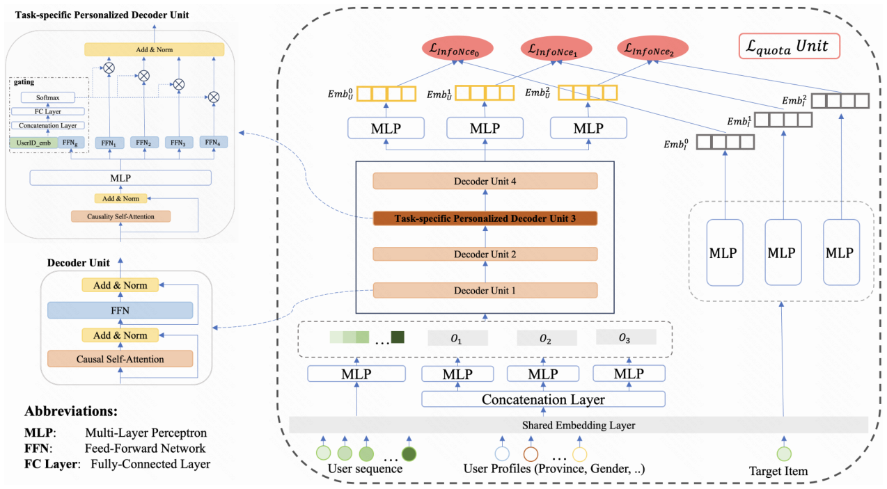
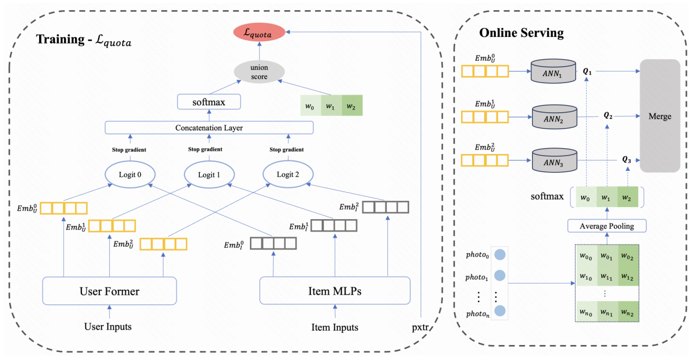

MPFormer: Adaptive Framework for Industrial Multi-Task Personalized Sequential Retriever (面向工业多任务个性化序列召回的动态自适应框架)
- 会议/期刊: CIKM 2025
- 作者与机构: Yijia Sun, Shanshan Huang, Linxiao Che, Haitao Lu, Qiang Luo, Kun Gai, Guorui Zhou（快手科技）
- 推荐链路定位: 召回（多目标 EBR 召回）
- 研究方向: 多任务学习与列表级重排 / 协同过滤与双塔召回
- 论文原文: https://arxiv.org/abs/2508.20400v1
- 开源代码: 暂未开源
TL;DR (1分钟核心速览)
工业推荐存在"多阶段优化错位"：精排已多目标化，召回仍是单目标，主流做法是并行多路单目标召回，导致训练/服务资源随目标数线性膨胀且无法处理弱耦合目标。MPFormer 提出目标条件化 Transformer，将 \(K\) 个目标 embedding 作为 token 拼入用户行为序列共享一次注意力计算，并用精排融合分数监督学习物品级目标权重、聚合为用户级动态召回配额。在快手 6 天生产日志（50 亿训练交互）上，pro_lvr 的 Recall@100 从 57.27% 提升至 66.15%，线上 7 天 A/B 总观看时长 +0.426%，推理资源降低 66.7%。
Background & Motivation (背景与核心矛盾)
- 主流范式: 召回采用双塔 EBR + ANN 检索，精排采用多目标联合优化（CTR、观看时长、转化率）；为对齐精排，工业界普遍并行部署 \(K\) 条单目标召回通路。
- 前人局限: 其一，多模型范式保持目标纯度但训练与服务开销随 \(K\) 线性增长，且跨目标信息流被割裂；其二，单模型范式（MVKE 的 MoE 虚拟专家、DMTL 蒸馏、MOPPR 列表损失）依赖预定义标签层级或级联目标，难以处理短视频场景中弱耦合、无包含关系的目标（pro_lvr / max_time / vtr 样本空间互不包含）。
- 核心洞察 (Key Insight): 作者发现用户/设备 ID 特征会主导学习，使不同目标的用户表征余弦相似度异常偏高（表征坍缩为 ID 映射），剔除 ID 后相似度回归近零正态分布，目标特异特征才得以学习；同时，物品侧共享 MLP 会使 Recall@100 掉 5%、NDCG@100 掉 6%，说明物品侧必须目标解耦。
- 本文切入点: 用"目标即 token"的方式把多目标塞进同一个 Transformer 序列，让注意力在行为模式与目标语义之间建立动态交互，再用精排分数作为监督信号学出用户级动态配额。
Method (核心方法设计)
1. 整体框架 (Overall Architecture)
用户侧输入由两部分构成：\(K\)个独立两层 MLP 对用户画像特征（年龄、性别、地域等稀疏 embedding，刻意不含用户 ID）变换得到的目标个性化 token\(\mathbf{O}_k\)，以及近期观看/点击/长播序列经 MLP 投影后的行为 token。二者拼接为长度\(n+K\)的序列送入 4 层 decoder stack，其中第三层替换为 PFormer 注入细粒度用户个性化，其余层为标准 decoder unit 且\(K\)个目标共享 QKV。最终取第\(L\)层对应\(\mathbf{O}_k\)位置的隐状态经 MLP 得到目标\(k\)的用户表征。物品侧用\(K\) 个独立 MLP 生成目标特异物品 embedding，与用户表征做内积后经 InfoNCE 训练；线上为每个目标维护独立 ANN 索引，按动态配额并行检索后融合去重。
flowchart TD
A["用户画像特征 + 行为序列"] --> B["K 个目标 token + 行为 token 拼接"]
B --> C["4 层 Decoder（共享 QKV，第 3 层为 PFormer）"]
C --> D["K 个目标用户表征 Emb_u^k"]
E["物品侧 K 个独立 MLP"] --> F["目标特异物品表征"]
D --> G["InfoNCE 多目标损失 + L_quota"]
F --> G
G --> H["K 个 ANN 索引 + 动态配额检索融合"]
2. 关键设计拆解 (Key Designs)
-
目标条件化注意力与共享 QKV（Objective-Conditioned Transformer）：传统 target-aware attention（如 DIN）要求物品与行为直接交互，与双塔召回约束不兼容；本文将 \(K\)个目标 embedding 直接追加到行为序列尾部，即\(\mathbf{H}^{(0)}=\{\mathbf{t}_1,\dots,\mathbf{t}_n,\mathbf{O}_1,\dots,\mathbf{O}_K\}\in\mathbb{R}^{d\times(n+K)}\)，用因果掩码自注意力让目标 token 从行为序列中"读取"与自身语义相关的模式。关键在于 QKV 跨目标共享：独立 QKV 的复杂度为\(\mathcal{O}_{\text{independent}}=K\cdot\mathcal{O}((n+1)d^2+(n+1)^2d)\)，共享后降为\(\mathcal{O}_{\text{shared}}=\mathcal{O}((n+K)d^2+(n+K)^2d)\)，二次项不再随\(K\) 线性膨胀——实验证明独立 QKV 带来 1.4 倍模型体积与 80% 额外训练机器，却只换来约 2% 的 Recall@100 提升，性价比极低。
-
PFormer 门控专家层（Task-specific Personalized Decoder Unit）：仅在第三层注入专家模块，避免堆叠专家带来的二次开销。以用户 ID 与设备 ID 拼接的 \(\mathbf{E}_u\)作为门控信号：\(\text{gate\_score}_i=\text{softmax}(\mathbf{W}_g[\mathbf{E}_u;\text{FFN}_g(\mathbf{x})]+\mathbf{b}_g)\)，再经 top-\(k\)专家选择后加权聚合\(\text{P-FFN}(\mathbf{x})=\sum_{i=1}^{\text{expertCut}}\text{gate\_score}_i\odot\text{FFN}_i(\mathbf{x})\)。直觉是：ID 信息不适合进入主表征（会引发坍缩），但适合作为"路由信号"决定该用户应激活哪一组目标特异参数，从而在单层内实现用户级个性化而不污染语义空间。
-
动态配额分配与训练目标：物品级权重 \(w_{ik}\)以精排融合分数\(pscore_i\)为监督（对\(s_k(u,i)\)停梯度）学习：\(\mathcal{L}_{\text{quota}}=\frac{1}{|\mathcal{N}|}\sum_{(u,i)\in\mathcal{N}}\left(pscore_i-\sum_{k=1}^{K}w_{ik}s_k(u,i)\right)^2\)，且只在正样本（实际曝光物品）上计算——负样本从未展示，\(pscore\)无定义，限定正样本可规避分布漂移。线上对用户最近\(n\)个交互物品的权重做 softmax 聚合得\(\tilde{\mathbf{w}}_u\)，配额\(Q_k(u)=\lfloor\tilde{w}_{uk}\cdot Q_{\text{total}}\rfloor\)。总损失为\(\mathcal{L}=\sum_{k\in K}\alpha_k\mathcal{L}_k\)，其中\(\mathcal{L}_k\)为温度缩放 InfoNCE，\(\alpha_k=\frac{\log(1+\gamma/|\mathcal{I}_k^+|)}{\sum_{k'}\log(1+\gamma/|\mathcal{I}_{k'}^+|)}\)按标签频次反比重加权，抑制点击类高频目标压制稀有目标。负采样采用扩展 in-batch 策略：每个正样本对保留三个目标标签、共享\(N-1\)个负样本，内存从\(\mathcal{O}(N^2)\)降至\(\mathcal{O}(N)\)。

Experimental Setup & Evaluation Protocol (实验设置与评估协议)
- 数据集与预处理: 快手短视频生产日志，连续 6 天，前 5 天 50 亿交互作训练、第 6 天 10 亿作测试；每条记录含用户 ID、物品 ID、观看时长、点击标志、时间戳及 15+ 侧特征。三个目标定义为：pro_lvr（观看时长超过该用户近 100 次曝光序列的 75 分位，样本占比 83%）、max_time（观看时长显著长于过去 \(k\) 个物品，样本占比 15%）、vtr（观看时长归一化目标，样本占比 77%），三者样本空间无严格包含关系。
| 数据集 | #Users | #Items | #Interactions | 稀疏度/密度 | 特征/场景说明 |
|---|---|---|---|---|---|
| Kuaishou 离线基准 | 4 亿+ DAU 采样 | 十亿级物品池 | 50 亿训练 / 10 亿测试 | 极稀疏 | 短视频，15+ 侧特征，3 个弱耦合目标 |
- 数据划分与防穿越 (Splitting Strategy): 全局时间戳切分（第 1–5 天训练，第 6 天测试），严格按天隔离避免未来信息泄漏。
- 排名评测协议 (Ranking Protocol): 报告 Recall@{10,50,100} 与 NDCG@{1,10,100}，未明示是否全库排序，从指标量级（Recall@100 达 66%）推断为大规模候选池排序评估；线上采用 7 天实时 A/B，10% 流量随机分流。
- 对比基线与超参设置: 基线为 KuaiFormer（Transformer 序列召回）、ComiRec（4 个兴趣头）、MVKE（4 个虚拟专家）；线上对比 Baseline（3 条 KuaiFormer 独立通路）、MPFormer_wo_dq（无动态配额）、MPFormer_w_eq（固定均分配额）。总候选容量统一为 \(C=3000\)。
Key Experimental Results (实验关键数据)
1. 主实验对比 (Main Results)
| 目标 | 指标 | MVKE | ComiRec | KuaiFormer | MPFormer | Improv. |
|---|---|---|---|---|---|---|
| pro_lvr | Recall@50 | 15.44 | 40.46 | 45.84 | 56.55 | +23.4% |
| pro_lvr | Recall@100 | 27.57 | 52.99 | 57.27 | 66.15 | +15.5% |
| pro_lvr | NDCG@10 | 1.83 | 10.46 | 13.09 | 20.27 | +54.8% |
| max_time | Recall@50 | 11.79 | 50.12 | 36.99 | 63.91 | +27.5% |
| max_time | Recall@100 | 19.92 | 61.34 | 48.87 | 71.89 | +17.2% |
| max_time | NDCG@10 | 1.47 | 15.84 | 9.31 | 26.03 | +64.3% |
| vtr | Recall@50 | 13.88 | 44.09 | 35.80 | 53.99 | +22.5% |
| vtr | Recall@100 | 25.86 | 55.23 | 48.07 | 64.50 | +16.8% |
| vtr | NDCG@10 | 1.33 | 12.34 | 8.11 | 18.38 | +48.9% |
线上 A/B（相对提升）：总观看时长 +0.426%、总 App 使用时长 +0.195%、平均观看时长 +0.455%、Real Show −0.411%（优于 wo_dq 的 −0.840% 与 w_eq 的 −0.618%）。
2. 消融实验 (Ablation Study)
| 配置 | pro_lvr R@100 | max_time R@100 | vtr R@100 | pro_lvr N@100 | max_time N@100 | vtr N@100 |
|---|---|---|---|---|---|---|
| MPFormer | 0.662 | 0.719 | 0.645 | 0.270 | 0.324 | 0.253 |
| w/ item_shared_mlp | 0.633 | 0.691 | 0.626 | 0.254 | 0.306 | 0.249 |
| w/ independent_QKV | 0.683 | 0.735 | 0.662 | 0.283 | 0.335 | 0.262 |
3. 关键实验发现 (Key Findings)
- 物品侧解耦是刚需，用户侧共享是划算的：物品侧改用共享 MLP 后三个目标 Recall@100 分别掉 2.9/2.8/1.9 个点、NDCG@100 掉 1.6/1.8/0.4 个点；反之用户侧独立 QKV 虽能再涨约 2 个点，却需 1.4 倍模型体积与 80% 额外训练机器，作者选择共享 QKV 换取工程可行性。
- 动态配额的价值体现在"止损"而非"增益"：相比固定均分（w_eq），MPFormer 仅多贡献 0.03% 总时长，但把 Real Show 的跌幅从 −0.618% 收窄到 −0.411%，同时多目标召回曝光率从 6.76% 提升至 7.62%（+12.7%）、有效观看率 +1.3%——说明用户级配额主要作用是避免弱目标被强目标挤占曝光。
- 目标稀疏度决定权重分布形态：max_time 因样本稀疏权重高度分散（均值 < 0.33，标准差 0.21），pro_lvr 近似正态峰值在 \(1/K\)，vtr 正偏（中位数 0.41）且集中在\(1/K\) 以上；用户级聚合配额为 pro_lvr 35% / max_time 18% / vtr 47%，与物品侧分布显著偏离，印证了用户级自适应的必要性。
Highlights & Limitations (亮点、对比与审稿批判)
- 与代表作对比 (vs. Prior Work): 相比 KuaiFormer 等单目标序列召回，MPFormer 用一次前向同时产出 \(K\) 个目标表征；相比 MVKE 依赖预定义标签层级的 MoE，本文不假设目标间包含关系，适配弱耦合目标；相比 MOPPR 的列表级损失，本文把目标对齐下沉到召回配额层面，并用精排分数做弱监督，形成"精排指导召回"的闭环。
- 可迁移亮点: 其一，"目标 embedding 作为序列 token + 共享 QKV"是把多任务塞进单塔的极简范式，可直接迁移到多场景召回；其二，用下游精排融合分数监督上游配额权重（停梯度、仅正样本）是一种低成本的多阶段对齐技巧，可复用于粗排/召回的目标权重学习。
- 审稿级局限批判: 其一，离线评估仅在快手单一工业数据集上进行，缺乏公开基准（如 Amazon、Taobao）验证，且未说明候选池规模与是否全库排序，Recall 绝对值偏高存疑；其二，动态配额依赖精排分数作为监督，存在精排-召回反馈回路风险，且 \(\mathcal{L}_{\text{quota}}\)的权重初始化与\(\gamma\)、\(\tau\)、expertCut 等超参敏感性未做分析；其三，PFormer 仅置于第三层的设计缺乏层位置消融支撑。
Rating (四维评分)
- 方法创新性 (Novelty): ⭐⭐⭐⭐ （"目标即 token + 共享 QKV"思路简洁有效，但本质是 target-aware attention 在双塔约束下的工程化变体，理论新颖度中等）
- 评估协议与实验扎实度 (Protocol & Experiments): ⭐⭐⭐ （线上 4 亿 DAU、7 天 A/B 极具说服力，但离线仅单数据集、缺公开基准与显著性检验，消融维度偏少）
- 写作与数学规范度 (Clarity & Rigor): ⭐⭐⭐⭐ （复杂度推导与配额损失设计交代清晰，公式规范；但部分符号如 \(\mathcal{N}\)、\(pscore\) 定义略简，层位置选择缺论证）
- 工业落地与复现价值 (Industrial & Practical Value): ⭐⭐⭐⭐⭐ （已在快手全量服务 400M+ DAU，P99 延迟稳定 80ms，推理资源降 66.7%、训练资源较 \(K\) 模型降 60%，落地价值极高；可惜未开源）